Pacejka 1989 tire
Relação não linear entre a força lateral e o ângulo de deriva através de uma expressão semi-empírica com coeficientes experimentais.
Baseado em: BAKKER, E.; PACEJKA, H. B.; LIDNER, L. A new tire model with an application in vehicle dynamics studies. [S.l.], 1989.
Contents
Sintax
Fy = TireModel.Characteristic(alpha,Fz,muy)
Arguments
The following table describes the input arguments:
| alpha | Tire slip angle [rad] |
| Fz | Vertical force [N] |
| muy | Friction coefficient [-] |
Description
A equação que descreve este modelo é dada por:
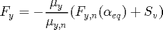
Onde 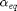 é o ângulo de deriva equivalente:
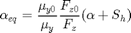
e 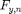 é a equação característica nominal dada por:
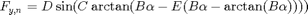
Onde 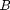, 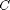, 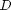 e 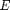 são coeficientes do modelo que podem ser obtidos através das seguintes expressões:
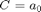
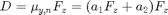
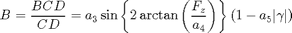
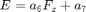
Os deslocamentos da curva são dados por:
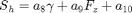
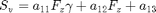
O modelo implementado aqui realiza tratamento do ângulo de deriva para valores acima de 90 graus. A partir deste valor a direção de avanço sobre a curva característica se inverte. O ângulo utilizado no modelo de pneu deve ser igual a zero quando o ângulo de deriva no método convencional for igual a 180. Isto deve ser feito porque a força lateral com 180 graus de ângulo de deriva deve ser igual a zero e não máxima como ocorre no modelo sem tratamento. Isto é obtido através da inclusão da linha de código:
ALPHA = asin(sin(alpha));
Em que o ângulo de deriva sem tratamento "alpha" da origem ao ângulo com tratamento "ALPHA" que será usado no cálculo da força lateral.
Hipóteses
- Relação não linear.
- Ângulo de deriva vai de -180 a 180 graus.
Code
classdef PneuPacejka1989 < DinamicaVeicular.Pneu
methods
% constructor
function self = PneuPacejka1989(varargin)
if nargin == 0
a0 = 1.002806; % Shape factor [-]
a1 = 2.014156; % Load dependency of lateral friction (*1000) [1/kN]
a2 = 710.5013; % Lateral friction level (*1000) [-]
a3 = 5226.341; % Maximum cornering stiffness [N/deg]
a4 = 78.87699; % Load at maximum cornering stiffness [kN]
a5 = 0.01078379; % Camber sensitivity of cornering stiffness
a6 = -0.004759443; % Load dependency of curvature factor
a7 = 0.6704447; % Curvature factor level
a8 = 0; % Camber sensitivity of horizontal shift
a9 = 0; % Load dependency of horizontal shift
a10 = 0; % Horizontal shift level
a11 = 0; % Combined load and camber sensitivity of vertical shift
a12 = 0; % Load dependency of vertical shift
a13 = 0; % Vertical shift level
self.params = [a0 a1 a2 a3 a4 a5 a6 a7 a8 a9 a10 a11 a12 a13];
else
self.params = varargin{1};
end
end
function Fy = Characteristic(self,alpha,Fz,muy)
% Input
% alpha - Ângulo de deriva [rad]
% Fz - Load [N]
% muy - Lateral friction coefficient (*1000) [-]
% Tratamento do ângulo de deriva
ALPHA = asin(sin(alpha)); % [rad]
ALPHA = 180/pi*ALPHA; % Conversão [rad] - [deg]
% Parâmetros nominais
a0 = self.params(1);
a1 = self.params(2);
a2 = self.params(3);
a3 = self.params(4);
a4 = self.params(5);
a5 = self.params(6);
a6 = self.params(7);
a7 = self.params(8);
a8 = self.params(9);
a9 = self.params(10);
a10 = self.params(11);
a11 = self.params(12);
a12 = self.params(13);
a13 = self.params(14);
Fz = Fz/1000; % Conversão [N] - [kN]
camber = 0; % Camber angle
C = a0; % Shape factor
muy0 = a1*Fz + a2; % Lateral friction coefficient nominal [-]
muy = muy*1000; % Lateral friction coefficient operacional
D = muy0*Fz; % muy = lateral friction coefficient
BCD = a3*sin(2*atan(Fz/a4))*(1-a5*abs(camber)); % Cornering stiffness
E = a6*Fz + a7; % Curvature factor
B = BCD/(C*D); % stiffness factor
Sh = a8*camber + a9*Fz + a10; % Horizontal shift
Sv = a11*Fz*camber + a12*Fz + a13; % Vertical shift
ALPHAeq = muy0/muy*(ALPHA + Sh); % Ângulo de deriva equivalente
% Reference characteristics
fy = D*sin(C*atan(B*ALPHAeq - E*(B*ALPHAeq - atan(B*ALPHAeq))));
% Lateral force
Fy = -muy/muy0*(fy + Sv);
end
end
Properties
properties
params
end
end